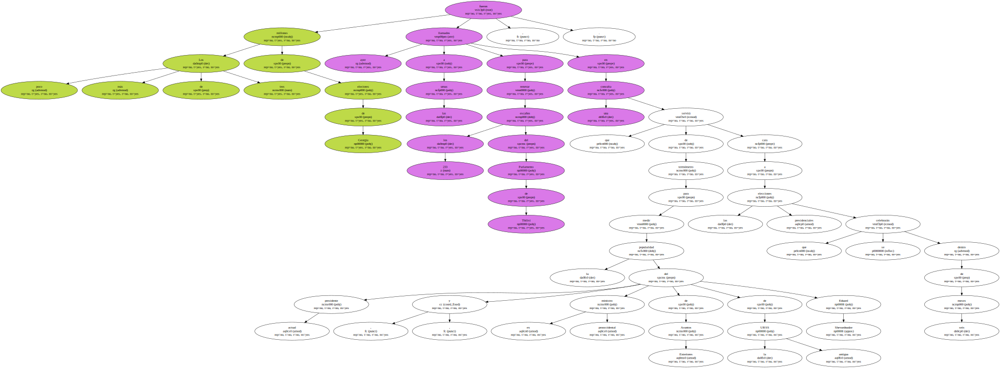
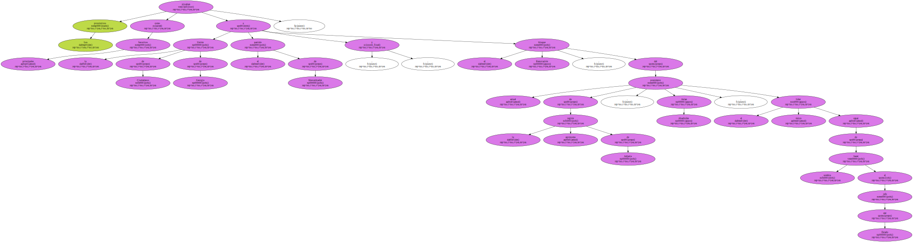
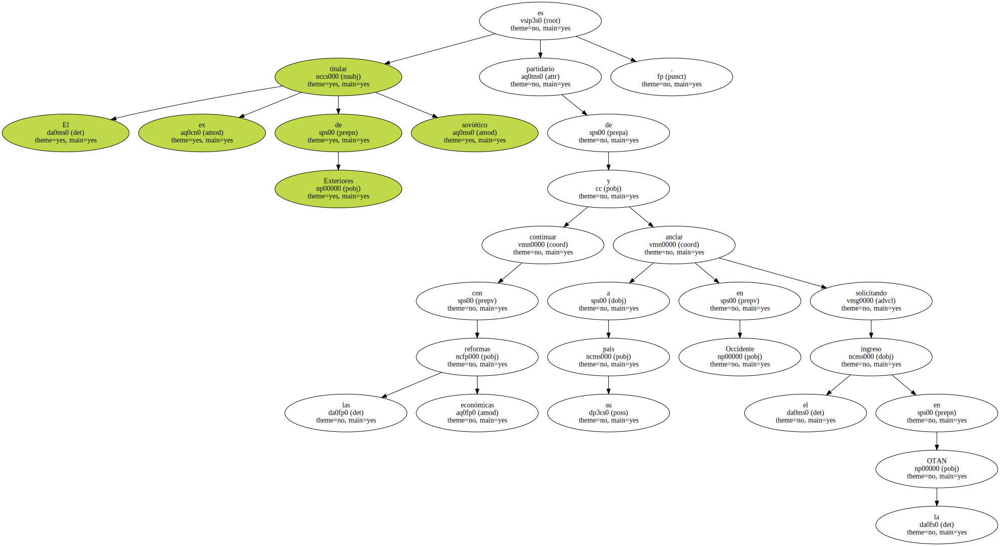
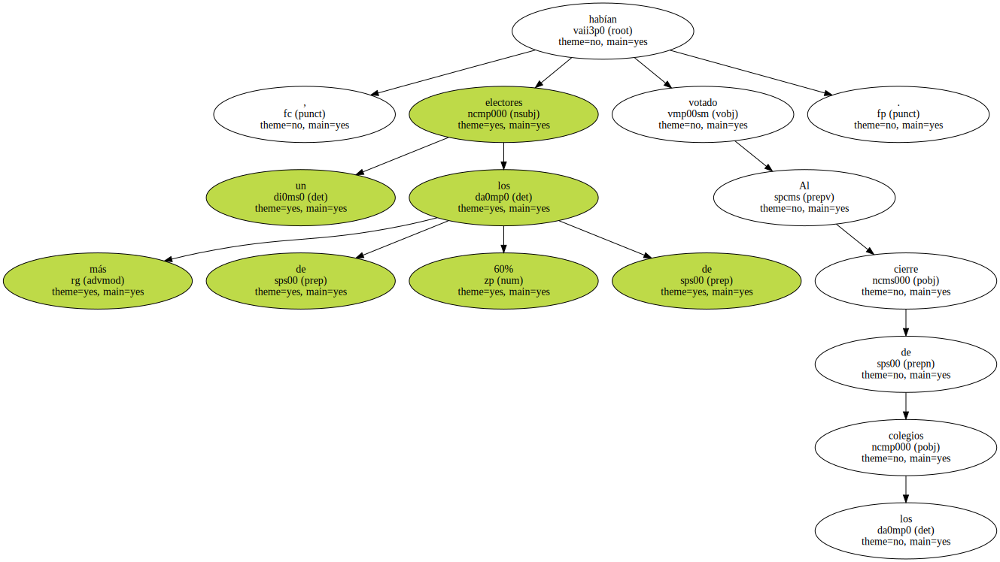
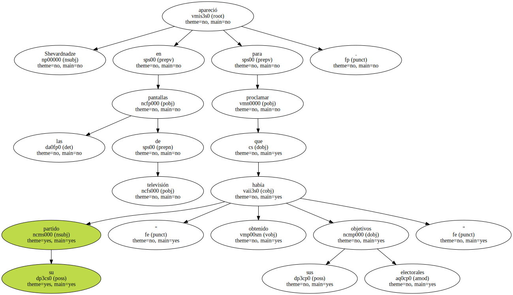
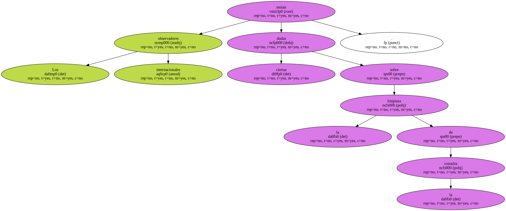

Los poco más de tres millones de electores de Georgia fueron llamados ayer a las urnas para renovar los 233 escaños del Parlamento de Tbilisi , en una consulta que servirá de termómetro para medir la popularidad del actual presidente y ex ministro prooccidental de Asuntos Exteriores de la antigua URSS , Eduard Shevardnadze , cara a las elecciones presidenciales que se celebrarán dentro de seis meses.
Los pronósticos situaban como principales favoritos a la Unión de Ciudadanos de Georgia , el partido de Shevardnadze , y el bloque Renovación , del actual presidente de la región autónoma de Adjaria , Aslan Abachidze , el único líder capaz de hacer sombra al jefe del Estado.
El ex titular de Exteriores soviético es partidario de continuar con las reformas económicas y anclar a su país en Occidente solicitando el ingreso en la OTAN.
El voto de los descontentos.

Abachidze , en cambio , prefiere poner el acento en la corrupción e intenta aglutinar el voto de los descontentos con las reformas , que al igual que en la mayoría de las exrepúblicas soviéticas , no han traído a Georgia la prosperidad esperada.

Al cierre de los colegios , más de un 60% de los electores habían votado.
Shevardnadze apareció en las pantallas de televisión para proclamar que su partido " había obtenido sus objetivos electorales ".
Los observadores internacionales tenían ciertas dudas sobre la limpieza de la consulta.
